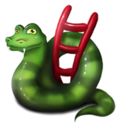

|
THE EUROPEAN CW ASSOCIATIONEuCW Snakes And Ladders/Leiterspiel |
 |
Das Leiterspiel stammt ursprünglich aus Indien und kam etwa vor 100 Jahren nach England. Es ist ein klassisches Brettspiel auf einem Spielfeld mit 100 Feldern und man nennt es auf Englisch CHUTES AND LADDERS in den USA bzw. SNAKES AND LADDERS in Großbritannien. Es gibt davon viele Varianten in mehreren Ländern, so z.B. das deutsche PFERDERENNEN mit rundem Spielfeld oder das LEITERLISPIEL südlich des Hochrheins. In den Niederlanden sagt man GANZENBORD ähnlich wie in Italien GIOCO DELL'OCA (Gänsespiel). In all diesen Spielen gibt es einen Start und ein Ziel, wobei die Spieler sich durch Würfel vorwärts bewegen. Dabei kann man durch Pech zurückfallen oder durch Glück viele Felder nach vorn in Richtung Ziel springen.
Das Spiel symbolisiert den Gang des Lebens. Nach Laune der Würfel trifft man auf bestimmte Ereignisfelder. Im Falle von Leitern wird der Spieler gefördert, im Falle von Schlangen fällt der Spieler zurück. Im Fall des deutschen Pferderennens heißen die negativen Ereignisfelder nicht Schlangen, sondern Wassergraben, Zaun, Sturz usw.
In unserer Version ist das Spielfeld die Locatorkarte der Länder des Hauses Europa, und sie hat gut 2000 Felder, alles vierstellige Loc-Felder wie JN49. Auf diesem riesigen Spielfeld gibt es aber im Gegensatz zum Brettspiel kein Start- und kein Zielfeld. Die Spieler hüpfen von Feld zu Feld durch QSOs, die sie mit LOC-Feldern machen. Es gibt keine Limits wann und wie oft sie welche Felder besuchen. Je mehr sie sich bewegen, sprich je mehr QSOs sie fahren, desto besser. Es gibt 12 Runden, jede davon dauert einen Monat, an dessen Ende die Bewegungen aller Spieler aufgenommen werden. Die betretenen Felder werden gezählt und erfasst, und aus der Verteilung der kontaktierten Felder entscheidet sich im Nachhinein welche Felder Schlangen und welche Leitern waren. Daraus ergibt sich dann das individuelle Ergebnis der Spieler des Vormonats.
Bei der Auswertung des Ergebnisses werden alle kontaktierten Felder geordnet nach der Häufigkeit ihres Auftretens. Alle Felder, mit denen nur ein einziges QSO gemacht wurde, werden zu Leitern und bringen dem Spieler Punkte.
Wird ein Feld hingegen von mindestens 5 Spielern durch ein QSO erreicht, dann kommt es in das Auswahlverfahren zur Bestimmung der Schlangen. In diesem Verfahren wird einfach jedes zehnte Feld tatsächlich Schlangenfeld. Dies geschieht mit einem Zufallszahlengenerator. Das Ergebnis der Auswahl kann aber nicht vor Eingang aller Logs vorausgesagt werden, da der Startwert des Zufallszahlengenerator das Produkt von Monatszahl und Anzahl aller Logeinträge ist. Die Felder mit mindestens 5 QSOs, welche nicht in diesem Verfahren ausgewählt werden, bleiben Normalfelder ohne Auswirkungen auf die Punkte der Spieler.